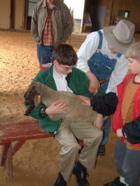

The Petting Barn

The Sunny Acres Petting Barn, conveniently located northeast of Council Bluffs, is a perfect setting for people of all ages to learn about farming and farm animals. At our farm you can enjoy over 100 friendly farm animals in a clean, relaxed, hands-on enviroment. The kids can bottle feed the baby goats, lambs, and calves in the Nursery and Bottle Baby pens.Come join us for a fun-filled day.
Teachers: our Petting Barn is an educational experience. Stroll around our 15 acres of open pasture and see animals in their natural habitat. Special events can be arranged for school field trips and classroom activities. Pony rides are available Saturdays and Sundays from April through October (weather permitting). Maximum rider weight limit of 75 pounds, please.
Bring a picnic lunch and stay the day or just enjoy a peaceful hour. Perfect for school or church groups, day-care centers, family outings, company picnics and especially birthday parties. Please come and enjoy our wonderful country atmosphere and relax! We invite you to come out and visit us often. There are always new and exciting events happening at Sunny Acres ... and that's just the way we like it!
Hours
- Monday - Friday: 9 am - 4 pm
- Saturday - Sunday: 11am - 3 pm
Admission
- Adult: $4.00
- Ages 2 - 12: $2.50